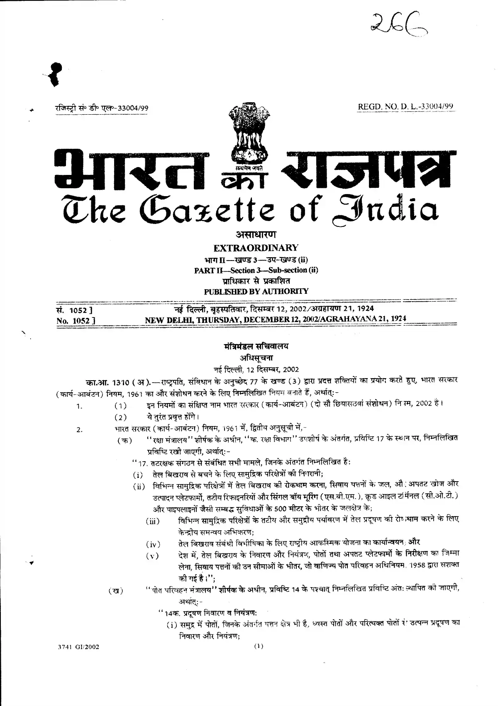
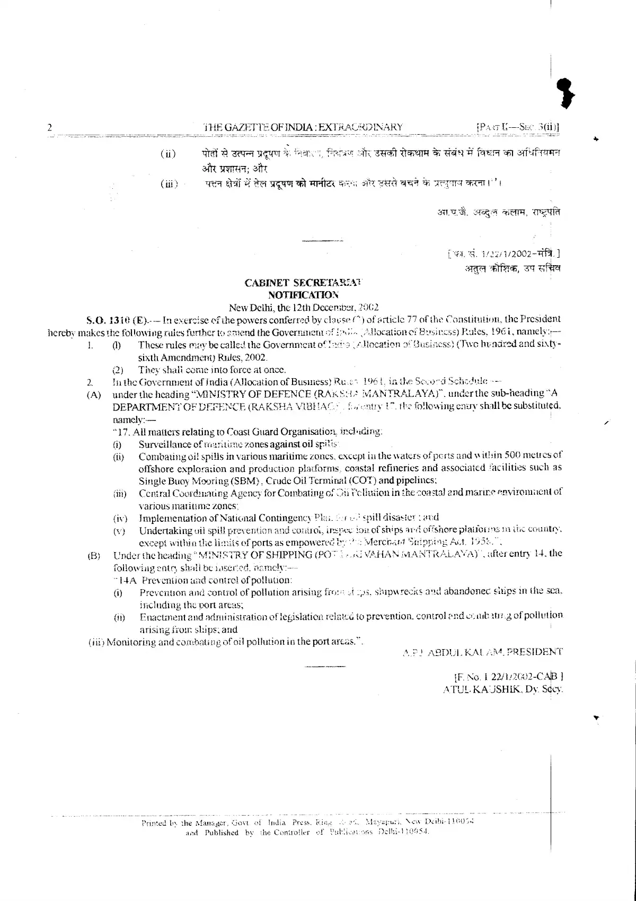

Amendment #266 (S.O. 1310(E), 2002)
2 changes: 0 to the First Schedule, 2 to the Second Schedule. 2 applied
The order, page by page
Page 1 of 2

Page 2 of 2

12Schedule 2 › MINISTRY OF DEFENCE › DEPARTMENT OF DEFENCE › entry 17
- 17. All matters relating to Coast Guard Organisation, including:
- i. Surveillance of maritime zones against oil spillst
- ii. Combating oil spills in various maritime zones, except in the waters of ports and within 500 metres of offshore exploration and production platforms, coastal refineries and associated facilities such as Single Buoy Mooring (SBM), Crude Oil Terminal (COT) and pipelines
- iii. Central Coordinating Agency for Combating of Ou Pollution in the coastal and marine environment of various maritime zones
- iv. Implementation of National Contingency Plan spill disaster; and
- v. Undertaking oil spill prevention and controi, inspection of ships and offshore platforms in the country except within the limits of ports as empowered by Merchant Shipping Act. 1956.“.
applied at schedule 2 › ministry MINISTRY OF DEFENCE (RANSHA MAN TRALAYA) › department A › entry 17 in the Rules after #266
after Schedule 2 › MINISTRY OF SHIPPING › entry 14
- 14A Prevention and control of pollution:
- i. Prevention and control of pollution arising from chips, shipwrecks and abandoned ships in the sea including the port areas
- ii. Enactment and administration of legislation related to prevention. control and combating of pollution arising from ships; and
- iii. Monitoring and combating of oil pollution in the port arcas.
applied at schedule 2 › ministry MINISTRY OF SHIPPING (POT PARIVAHAN MANTRALYA) › group_heading IV › entry 14 in the Rules after #266
How this document was read
From the Government of India (Allocation of Business) Rules, 1961 and their amendments, as published by the Cabinet Secretariat (cabsec.gov.in), read by orgpedia. The readings of the older scanned gazettes have known gaps.